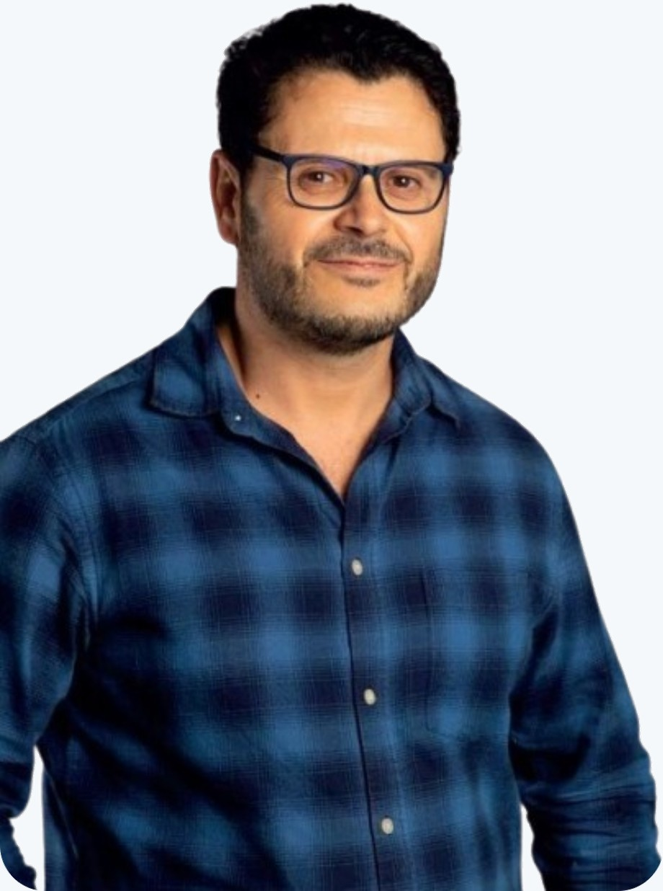
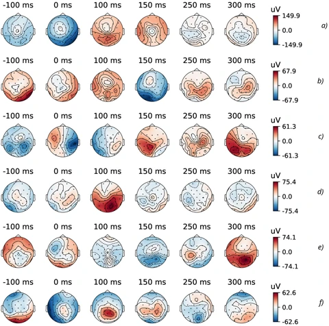

Chercheurs
Découvrir mes axes de recherche et consulter les publications associées.
Explorer les axes →Université Paris 8 · Laboratoire CHArt / THIM
Mes recherches portent sur l’accessibilité numérique, le traitement du signal et des images et les technologies d’assistance. J’étudie notamment l’accès aux contenus visuels et l’analyse de signaux physiologiques et de comportements.
Accessibilité numérique · Traitement du signal et des images · Technologies d’assistance · Intelligence artificielle · Interfaces cerveau-machine · Interaction homme-machine
Je dirige le département Ingénierie – Cognition – Handicap (ICH) et le master MIASHS, parcours Technologie et Handicap.

ICMV 2026. Communication sur l’analyse du comportement facial pour la détection de la fatigue au volant. Lire la référence de la communication.
Handicap 2026. Participation au comité scientifique de la conférence francophone sur les technologies d’assistance. Composition du comité scientifique.
Coopération Erasmus+ avec Sfax. Coordination des échanges universitaires et préparation d’un double diplôme avec l’ENIS. Projets et partenariats internationaux.
Publication dans Frontiers in Neuroinformatics. Étude de l’augmentation de données pour classifier des actions physiques à partir de signaux EEG. Article et texte intégral.
Découvrir mes axes de recherche et consulter les publications associées.
Explorer les axes →Découvrir mes collaborations et les possibilités de projets communs.
Projets et collaborations →Découvrir les cours, les projets et le master Technologie et Handicap.
Enseignements et master →Représentations à différents niveaux de détail et modalités d’exploration visuelle ou tactile.
Vision par ordinateur, indices comportementaux et mesures physiologiques.
Traitement d’images et transcription en braille pour faciliter la création de cartes tactiles.
Étudier des interfaces associant réalité augmentée multimodale et interaction cerveau-machine.
Frontiers in Neuroinformatics · 2025
Comment le fenêtrage temporel, la position de l’étiquette et l’ajout de bruit influencent-ils la classification d’actions physiques à partir de signaux électroencéphalographiques (EEG) ? Notre étude examine ces paramètres sur le jeu de données GAL.
Découvrez le protocole, les résultats et leurs limites à travers deux figures de l’article.
Comprendre l’étude et ses figures →Référence et texte intégral
Cinq travaux sur l’accessibilité des images, l’analyse des signaux physiologiques et les interfaces d’assistance.
Changez la taille des blocs qui représentent une forme simple et comparez les détails visibles. Contexte scientifique et méthodes.
Une maison composée d’un toit triangulaire, d’un corps rectangulaire et d’une porte évidée en bas au centre.
Forme originale affichée.
Exemple pédagogique sur une image synthétique, par moyenne de blocs. Il illustre la granularité visuelle ; il ne reproduit pas un algorithme publié et ne génère pas de rendu tactile.
Vous souhaitez travailler avec moi ? Je vous invite à me présenter votre projet en accessibilité numérique, analyse de signaux ou technologies d’assistance. Les possibilités d’encadrement et de financement sont à examiner ensemble ; cet appel à prise de contact ne constitue pas une offre de poste financé.
Représentations accessibles d’images et de documents ; analyse multimodale de la fatigue ; classification de signaux EEG et interfaces d’assistance. Le sujet précis dépend de votre parcours, des données disponibles et du cadre d’accueil.
Stage de Master : précisez votre formation, vos dates, la durée et vos compétences en programmation, traitement d’images ou de signaux, apprentissage automatique ou évaluation de l’accessibilité, selon le sujet. Indiquez un lien vers votre CV et un ou deux travaux représentatifs.
Thèse : présentez votre parcours de Master ou équivalent, une question de recherche, les méthodes envisagées et votre calendrier. Signalez les pistes de financement et de cotutelle éventuelles. L’admission et l’encadrement relèvent des procédures de l’établissement et de l’école doctorale.
Collaboration : indiquez votre équipe, l’objectif scientifique, les apports attendus de chaque partenaire et le calendrier.
Utilisez le formulaire avec l’objet « Stage Master », « Projet de thèse » ou « Collaboration ». Présentez votre projet en quelques lignes et ajoutez les liens utiles. Le formulaire n’accepte pas de pièces jointes : nous conviendrons ensuite de l’envoi des documents nécessaires. Ne transmettez pas de données sensibles lors de ce premier échange.
À l’Université Paris 8, j’associe recherche au laboratoire CHArt, enseignement dans le master Technologie et Handicap et coopérations scientifiques.